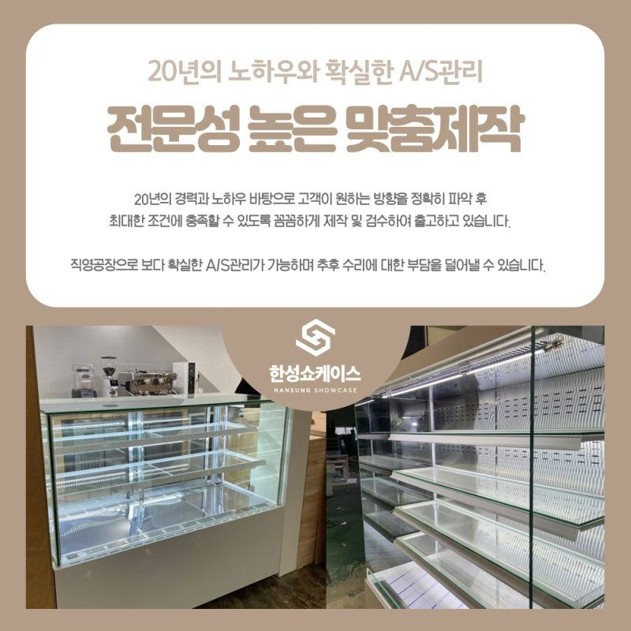
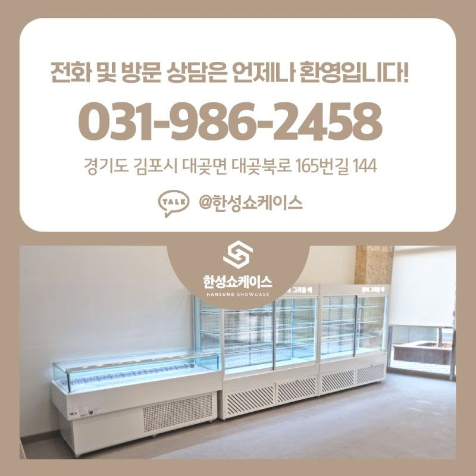
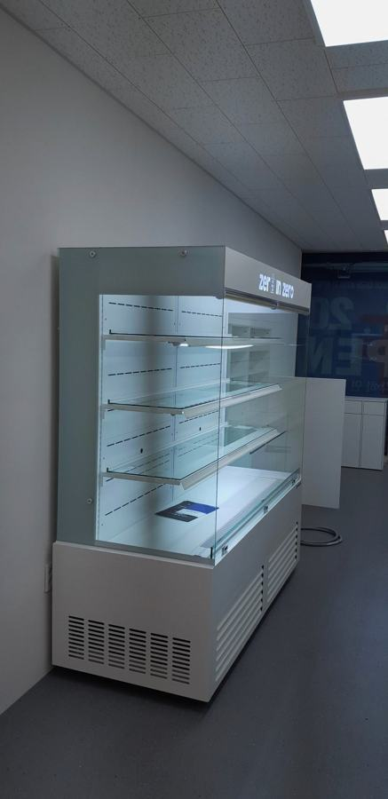

오픈쇼케이스
오픈쇼케이스 가격이 견적마다 다른 이유와 비교 기준

오픈쇼케이스 가격은 가로 길이와 단 수, 에어커튼과 냉각 구조, 나이트커버·조명 같은 옵션, 그리고 배송·설치 조건에서 차이가 납니다. 견적을 비교할 때는 이 항목들을 같은 조건으로 맞춘 뒤, 판매 후 A/S를 누가 하는지까지 함께 보셔야 실제 비용을 가늠할 수 있습니다.
안녕하세요. 베이커리, 카페, 샐러드 매장의 오픈형 냉장 진열장을 직접 제작하는 한성쇼케이스입니다.
오픈쇼케이스 견적을 두세 군데서 받아 보시면 비슷한 크기인데 금액 차이가 꽤 나서 당황하시는 경우가 많습니다.
싼 곳을 고르자니 불안하고, 비싼 곳은 왜 비싼지 알 수가 없죠.
오픈쇼케이스는 문이 없는 대신 냉기를 앞면에 붙잡아 두는 구조가 핵심이라, 겉모습이 비슷해도 안쪽 사양에서 차이가 큽니다.
그 차이가 그대로 가격과 유지비로 이어집니다.
오늘은 금액이 아니라 가격을 만드는 항목을 짚어 드리고, 견적서를 같은 조건으로 비교하는 방법을 정리해 보겠습니다.
1. 크기와 단 수
가장 기본은 가로 길이와 높이, 그리고 선반 단 수입니다. 같은 가로 길이라도 단이 많아지면 단마다 냉기와 조명을 보내야 해서 구조가 달라집니다.
견적을 받을 때는 외형 치수만이 아니라 실제 진열 면적과 선반 깊이, 선반이 유리인지 철재인지도 함께 적어 달라고 하세요.
숫자가 같아 보여도 쓸 수 있는 진열 공간이 다른 경우가 있습니다.
- 외형 치수와 실제 진열 면적을 함께 받아 보세요.
- 선반 개수와 소재를 견적서에 적어 달라고 하세요.
2. 에어커튼과 냉각 구조
오픈쇼케이스는 위에서 아래로 흐르는 찬 바람의 막, 즉 에어커튼으로 냉기를 지킵니다. 송풍구 위치와 바람 세기 조절, 선반 앞쪽까지 온도가 고르게 유지되는지에 따라 성능과 전기 사용이 달라집니다.
이 부분은 사진으로 비교가 안 되기 때문에 상담할 때 직접 물어보셔야 합니다. 어떤 콤프레셔를 쓰는지, 기계실이 본체 안에 있는지 따로 빼는 방식인지도 가격 차이를 만드는 요소입니다.
샐러드나 샌드위치처럼 온도에 민감한 상품을 오픈쇼케이스 앞줄까지 채우는 매장이라면, 선반 앞쪽 온도가 얼마나 유지되는지가 특히 중요합니다.
이 성능 차이가 곧 상품 폐기량과 이어집니다.


3. 옵션: 나이트커버, 조명, 디자인
영업이 끝난 뒤 앞면을 덮는 나이트커버는 밤사이 냉기 손실과 먼지를 줄여 줘서 유지비에 도움이 됩니다.
조명 색과 개수, 상단 로고 각인, 매장 벽에 맞춘 매립형 마감, 프레임 색상 같은 디자인 요소도 가격에 영향을 줍니다.
옵션이 많을수록 좋다는 뜻은 아닙니다. 매장 운영 시간과 진열 상품을 기준으로 꼭 필요한 옵션을 고르고, 견적서마다 같은 옵션이 들어갔는지 확인해 비교하세요.
- 나이트커버 포함 여부를 확인하세요.
- 조명 색과 디자인 옵션이 같은 조건인지 맞춰 보세요.
4. 배송·설치와 사후관리까지 포함해 보세요
견적서에 배송비와 설치비가 포함되어 있는지, 계단 운반이나 기존 제품 철거가 따로 붙는지 꼭 확인하세요.
본체 가격이 낮아 보여도 이 항목이 추가되면 차이가 줄어들기도 합니다.
오픈쇼케이스는 매일 쉬지 않고 돌아가는 장비라, 처음 가격보다 몇 년 동안의 유지비와 수리 대응이 더 큰 비용이 될 수 있습니다.
무상 A/S 기간과 수리 주체, 지역 서비스 센터 유무까지 함께 보고 판단하세요.
기존 매장에서 쓰던 쇼케이스를 교체하는 경우라면 철거한 제품을 가져가 주는지, 따로 처리해야 하는지도 미리 확인해 두세요.
체크리스트
- 외형 치수와 실제 진열 면적
- 선반 단 수와 소재
- 에어커튼·콤프레셔 사양
- 나이트커버·조명 옵션
- 배송·설치·철거 포함 여부
- A/S 기간과 수리 주체
현장에서 자주 보는 경우: 1인 창업에서 가격과 디자인 사이를 고민할 때
프랜차이즈 창업보다 인테리어 부담이 큰 1인 창업 사장님들은 냉장오픈쇼케이스 하나를 고를 때도 가격, 디자인, 공간, 사이즈를 모두 따져야 해서 고민이 깊어집니다.
중고는 걱정할 부분이 많고 매장 스타일과 맞지 않아 난감한 경우도 생기죠.
저희는 직영 공장을 운영해 제작 요청 후 바로 공장에서 제작하고 배송, 설치까지 한 번에 이어지도록 진행합니다.
공장을 직접 방문해 상담받으실 수도 있고, 업종에 맞는 기능과 매장에 맞는 사이즈를 함께 정합니다. 유통 마진이 없는 구조라 맞춤 제작이라도 가격 거품을 줄일 수 있습니다.



자주 묻는 질문
오픈쇼케이스 견적을 받으려면 무엇이 필요한가요?
설치할 자리의 가로·깊이·높이, 진열할 상품 종류, 원하는 단 수와 조명 색을 알려 주시면 정확한 견적이 가능합니다.
매장 사진이 있으면 디자인 제안도 함께 드립니다.
맞춤 제작은 기성품보다 비싸지 않나요?
직접 제조해 유통 단계를 줄이기 때문에 같은 사양 기준으로 비교하면 차이가 크지 않은 경우가 많습니다.
같은 조건으로 견적을 비교해 보시길 권해 드립니다.
공장에 직접 가서 상담할 수 있나요?
네, 공장 방문 상담이 가능합니다. 대표전화 031-986-2458로 일정을 먼저 맞춰 주시면 준비해 두겠습니다.
매장 조건에 맞춰 만드는 한성쇼케이스
원하시는 제품 사진과 설치할 공간 사진만 보내 주셔도 매장에 맞는 구성을 추천해 드립니다.
- 전국 240여 개 A/S 전담 센터 운영
- 본사 대량 자재 매입으로 품질 대비 합리적인 가격
- 유럽제·삼성 냉각 콤프레셔 적용
- 국내 최초 쇼케이스 전문 디자이너 상주
매장 폭과 원하는 진열 구성을 알려 주세요. 실측과 견적을 안내해 드립니다.
031-986-2458